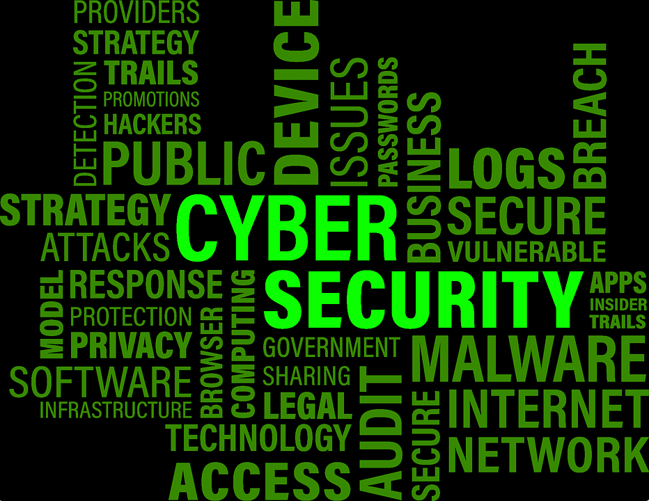

Con la transformación digital son muchas las empresas que están introduciendo herramientas y programas nuevos a sus

sistemas que facilitarán, y mucho, el trabajo a todos los empleados. Pero todos estos avances no vienen solos. La ciberseguridad es un tema que se incorporará en nuestras agendas, de aquí a 5 años, y con mucho protagonismo. La
importancia de la ciberseguridad es proporcional a la creciente digitalización de nuestras vidas. Y es que con uno de los penúltimos estadios de irrupción del Internet of things hay un crecimiento exponencial de la amenaza hacia los dispositivos
más vulnerables. Debido a los últimos ciberataques como WannaCry, muchas compañías temen por su información, ya que la ven seriamente en peligro. Conceptos como ciberresiliencia, capacidad que tienen que tener las empresas para prevenir,
detectar y responder a las amenazas hacia sus sistemas, formarán parte de nuestro día a día en un futuro no muy lejano. Es por eso que hemos seleccionado 4 artículos que definen a la perfección que son estos virus ransomware, cómo podemos detectarlos y qué podemos hacer en caso de estar infectados.
El hacker Deepak Daswani nos dara unos consejos para proteger nuestros ordenadores en el siguiente video: